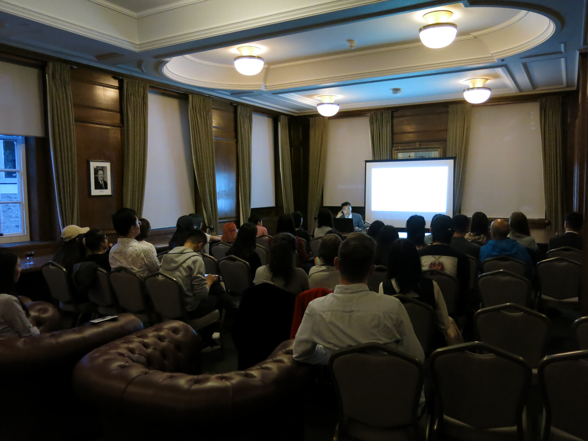

LCSFG author event with Chen Qiufan
The author introduces his novel 'The Waste Tide / 荒潮' translated by Ken Liu
12th August 2019, 8-9pm, Goodenough College, London

On Monday 12th August, we invited award-winning science fiction writer Chen Qiufan (a.k.a. Stanley Chan) to London where he gave a presentation, “Why I wrote an SF novel on e-waste”, and discussed his thinking behind his novel 'The Waste Tide / 荒潮'.
'The Waste Tide' is an 'eco-techno-thriller' that centres the environmental pollution caused by global e-waste disposal. The hyper-real near future narrative takes our globalised throwaway consumption of electronics into the posthuman, and centres the environmental disaster of Silicon Isle, a fictional e-waste recycling landfill that’s based on one of the world’s largest sites in Guiyu, China. It articulates the social, economic and ecological consequences for migrant labourers, our increasingly embodied relationship with technology and accountability of the consuming classes. It was translated by Ken Liu and published in English in April 2019, by Tor Books (US) and Head of Zeus (UK).
This author event concluded with an open discussion between the author, the London Chinese Science Fiction Group and our attendees, chaired by Angela Chan and Ma Chen. We discussed his ideas further with him, asking about the characters and decision making processes for 'The Waste Tide' and climate science fiction more widely. Our attendees also asked the author more questions regarding his research for the novel, how to avoid stereotypical sci-fi plots and animals.
Thank you Chen Qiufan, we hope this will be the beginning of our group's direct collaborations with authors!
'LCSFG author event with Chen Qiufan' was organised by the LCSFG with thanks to Goodenough College's Port Talk programme.

Read Chen's article about 'The Waste Tide' here and here is the publisher’s excerpt from the novel:
Mimi is drowning in the world’s trash.
She’s a waste worker on Silicon Isle, where electronics — from cell phones and laptops to bots and bionic limbs — are sent to be recycled. These amass in towering heaps, polluting every spare inch of land. On this island off the coast of China, the fruits of capitalism and consumer culture come to a toxic end.
Mimi and thousands of migrant waste workers like her are lured to Silicon Isle with the promise of steady work and a better life. They’re the lifeblood of the island’s economy, but are at the mercy of those in power.
A storm is brewing, between ruthless local gangs, warring for control. Ecoterrorists, set on toppling the status quo. American investors, hungry for profit. And a Chinese-American interpreter, searching for his roots.
As these forces collide, a war erupts — between the rich and the poor; between tradition and modern ambition; between humanity’s past and its future.
Mimi, and others like her, must decide if they will remain pawns in this war or change the rules of the game altogether.